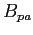
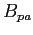

Next: Global Fisheries Up: The knowledge-base for commercially-exploited Previous: Timespan
The three most common assessment methods were Statistical catch-at-age/length models (n=164), Virtual Population Analyses (n=90) and Biomass dynamics model (n=45). Regionally, Virtual Population Analysis (VPA) is still the most common assessment model for ICES (71% of 63 assessments), DFO (59% of 22 assessments) and Argentina's CFP (83% of 6 assessments), whereas statistical catch-at-age and -length models are more common for NMFS (66% of 139 assessments), AFMA (81% of 16 assessments) and MFish (76% of 29 assessments).
Biomass- or exploitation-based reference points were available for
257 (81%) and
222 (69%)
assessments, respectively. The most commonly reported biomass-based
BRPs relate to biomass at MSY (e.g.  ), to ``limit'' biomass
(e.g.
), to ``limit'' biomass
(e.g.  ) and to ``precautionary approach'' biomass (e.g.
). Biomass and exploitation of US stocks under the management
of NMFS must follow MSY-based reference points whereas other fisheries
agencies use different BRPs.
) and to ``precautionary approach'' biomass (e.g.
). Biomass and exploitation of US stocks under the management
of NMFS must follow MSY-based reference points whereas other fisheries
agencies use different BRPs.